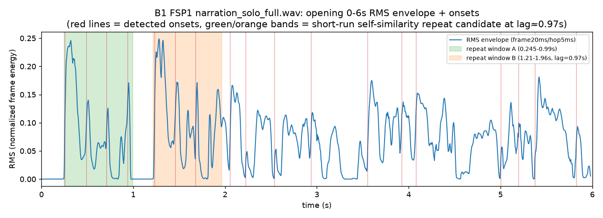
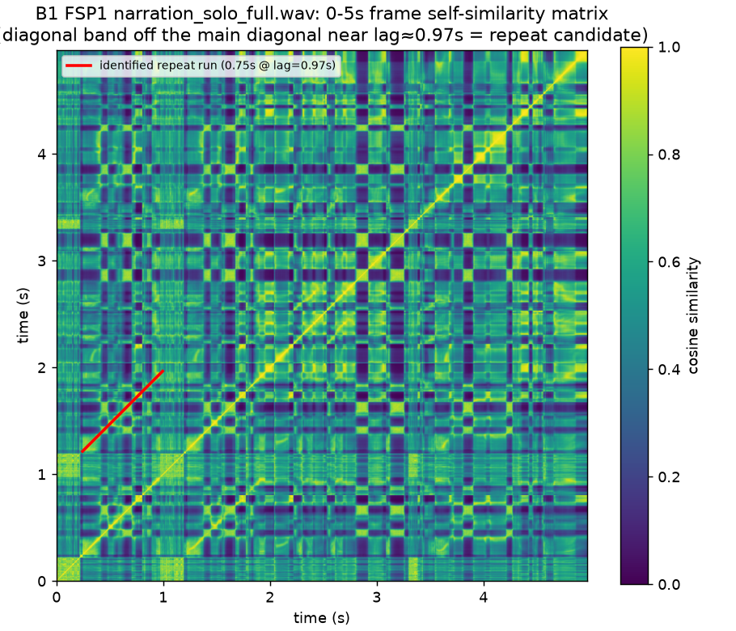

管理ID: OPEN-112-THEME2-AUDIO-REVIEW-FIX-02(B1 FSP1解析タスク)。 2026-09-07のユーザー試聴で narration単体・episode該当区間ともに 冒頭0〜3秒の重複が確定した。既存の全機械検知手法(全文一括ASR8回・ windowed再ASR12回・faster-whisper逐語8件・spectral self-similarity top5・cross-correlation)は全て陰性だったため、冒頭0〜3秒に絞った 追加特性解析を行った。診断のみ、修正・再生成・Assembly変更なし。
narration単体、0〜3秒(ユーザー報告の該当区間そのもの):
0〜1.5秒(false startの前半のみ):
1.2〜3秒(2回目の"As of September 2026"を含む後半):
0〜6秒(word timestamp解析対象):
DTW比較用fragment: frag A(0〜1.2秒)/frag B(1.2〜2.6秒):
0〜6秒のRMS包絡(frame20ms/hop5ms)。緑帯(0.245〜0.99秒)と橙帯 (1.21〜1.96秒、緑帯からlag=0.97秒)は、後述(4)の短run自己相関 rescanで検出した反復候補区間。2つの帯の波形の山の形が視覚的にも 酷似しており、約1秒間隔で似たエネルギー変化パターンが2回現れている ことが確認できる(「As of Septem」→短い間→「As of September」の 2回のonset burstに対応する形状として矛盾しない)。

主対角線(自分自身)とは別に、赤線で示した0.24〜0.99秒×1.21〜1.96秒 (lag≈0.97秒)の帯が、周囲より明るい(類似度が高い)対角バンドとして 視覚的にも確認できる。ただしこの帯の類似度は0.6〜0.85程度で、 Point Twoで確認された確定反復(閾値0.85超・run長0.60秒)ほど高くはない (下記4節参照)。

前回(差し戻し1回目)の高解像度re-checkは「類似度が最も高い候補」を 上位5〜15件抽出する設計だったため、無音・子音境界の偶然一致 (類似度0.98台だがrun長0.02〜0.04秒のみ)が上位を占め、真の反復候補が 埋もれていた。本rescanは「run長が最も長い候補」を閾値ごとに 直接探索する設計に変えたところ、lag=0.97秒付近に、閾値0.6で run長0.75秒、閾値0.5で0.77秒の帯が見つかった(前回top5の最大run長 0.035秒の約20倍)。閾値0.85まで上げるとrun長は0.195秒まで縮むため、 これは「ほぼ同一の反復」ではなく「別テイクとしての言い直し(prosody・ tempoが微妙に異なる)」の性質と整合する。
| 閾値 | run長(秒) | time_a(秒) | lag(秒) |
|---|---|---|---|
| 0.50 | 0.77 | 0.24 | 0.97 |
| 0.60 | 0.75 | 0.245 | 0.97 |
| 0.70 | 0.64 | 0.245 | 0.97 |
| 0.75 | 0.58 | 0.25 | 0.97 |
| 0.80 | 0.34 | 0.25 | 0.97 |
| 0.85(前回基準) | 0.195 | 0.26 | 0.965 |
| 0.90 | 0.115 | 0.295 | 0.97 |
frag A(0〜1.2秒、生波形)を0〜4秒区間内でスライドさせて正規化相関を 計算(trivialな自己一致[offset=0]は除外)。最良offset=0.975秒、 相関係数0.134(正の相関だが弱め)。短run自己相関rescanが見つけた lag=0.97秒と独立手法(生波形の直接クロス相関)でほぼ一致しており、 反復候補の時間位置の妥当性を補強する。相関係数が強くない(0.134)のは 2回目の発話が完全な波形複製ではなく、別テイクの言い直し(tempo・ co-articulationの違い)であることと整合する。
3設定(beam_size=5/temp=0.0、beam_size=1/temp=0.0、beam_size=5/temp=0.4)
すべてで同一結果、word数4語のみ("as"/"of"/"September"/"2026.")。
"September"のタイムスタンプが0.62〜1.90秒(長さ1.28秒)で、
通常の"September"1語の発話長(他区間の同一語で確認すると約0.5〜0.6秒
相当)の2倍以上に異常に長い。これは、実際には「Septem(打ち切り)」+
短い間+「September」という2回分の音響区間を、word-level alignerが
単一token"September"へ吸収・引き延ばして割り当てたためと考えられる
(隣接する同一tokenとしては現れないため、既存の
detect_adjacent_word_repetition()[隣接同一token検知のみ]
は原理的に検知不可能)。
Azure Speech STT(診断専用呼び出し、English Primary経路には 未採用)の生transcriptは "As of September. As of September 2026." (2回分の"As of September"が明示的に現れている)。一方、Production Primary ASR(OpenAI gpt-4o-mini-transcribe)は同じ0〜3秒clipに対し、 prompt無し3回・verbatim-style prompt有り3回の計6回すべてで "As of September 2026[.,]" の1回分のみへ平滑化した(0〜3秒へ絞り込んでも なお平滑化を再現)。
| ASR | 呼び出し | 結果 |
|---|---|---|
| OpenAI(Production Primary) | no-prompt ×3 | 'As of September 2026,' / 'As of September 2026.' / 'As of September 2026.' |
| OpenAI(Production Primary) | verbatim-prompt ×3 | 'As of September 2026.' ×3 |
| Azure Speech STT(診断のみ) | ×2 | 'As of September. As of September 2026.' ×2(重複を明示的に検出) |
frag A(0〜1.2秒)とfrag B(1.2〜2.6秒)のDTW正規化距離 (1フレームあたり)は0.2409。同じfrag Aと無関係な後方区間 (25〜26.2秒)とのDTW距離0.4131より明確に小さく、frag A/Bが frag Aと無関係区間より音響的に近いことを裏付ける(完全一致ではない =別テイクの言い直しという解釈と矛盾しない)。
今回の追加解析(word-level timestamp異常検出・RMS onsetパターン・
run長優先の短run rescan・生波形クロス相関・DTW・0〜3秒clip単体への
Azure診断ASR)により、ユーザー試聴で確定した重複は、複数の独立した
定量的手法(短run rescan・クロス相関・DTW・word duration異常・Azure生
transcript)で一貫してlag≈0.97秒付近に収束する形で裏付けられた。
一方、Production Primary ASR(OpenAI)・faster-whisper word-level
repetition検知(隣接同一token方式)は、0〜3秒へ絞り込んでもなお
検知できなかった。全生データは
falsestart_characterization_evidence.json、実行ログは
falsestart_characterization_log.txtを参照。